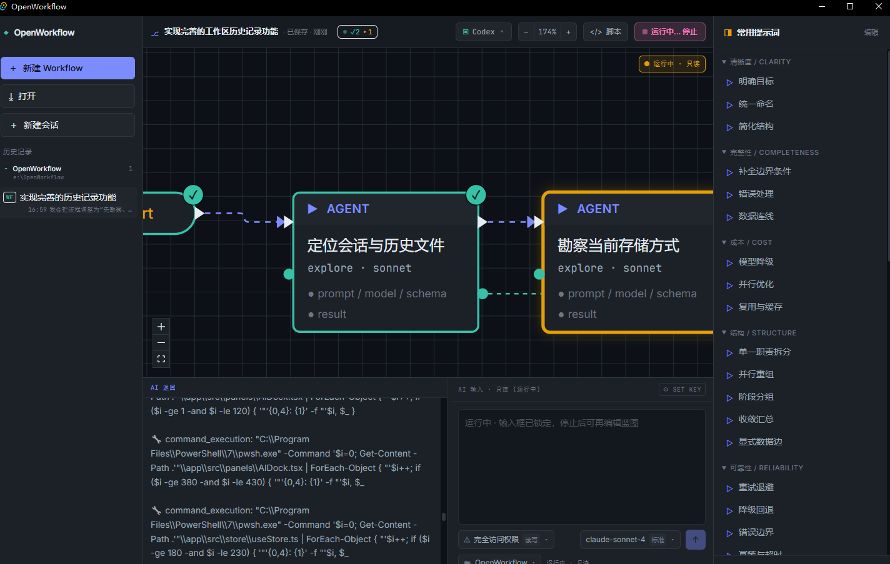

最近一直在看 Claude Code 的 workflows。
它吸引我的地方不是“又多了一个功能”，而是它把复杂任务从一轮一轮聊天里抽了出来。任务可以拆成多个 subagents、并行分支和流水线，然后交给脚本去协调执行。
这件事挺关键：workflow 不再只是一次对话里的临时安排，而是可以保存、修改、重复使用的流程。
不过看完之后，我也有一个问题：如果 Workflow 会成为 AI 编程里很常用的一层，它为什么要绑在某一个模型或某一个 CLI 上？
顺着这个问题，我最近发现了一个开源版 OpenWorkflow。
它的思路很直接：把 Claude Code 这类 Workflow 做成可视化画布，并且让同一份 Workflow 可以面向 Claude Code、Codex、Gemini，甚至更多本地或云端模型运行时。

先说我觉得比较有用的几个点。
对我来说，最核心的还是前两点：workflow 不应该每换一个模型就重写一遍，也不应该只能藏在某个工具的脚本里。
比如一个代码审查流程，大概会有这些步骤：
这套结构本身是有价值的。它不应该只是 Claude Code 脚本里的一段逻辑，也不应该因为换成 Codex 或 Gemini 就全部重来。
OpenWorkflow 的想法是，先把 workflow 画出来。后面跑在哪个模型上，再通过运行时适配去处理。
如果只是想先摸一下这个工具，不用一上来研究所有概念。我当时是按下面这个顺序试的。
打开应用后，左侧有“新建 Workflow”。点一下，会得到一个最基础的流程：
Start -> Agent -> End
这一步先不用追求复杂。先确认画布上能看到节点，能拖动，能选中节点。
配图占位：这里可以补一张“新建 Workflow 后的默认画布”截图。
顶部工具栏里可以切换运行时适配器，比如：
这就是 OpenWorkflow 比较核心的点。它不是把 workflow 直接绑死到某一个模型里，而是把运行时作为可以切换的目标。
如果你只是先体验，可以先选默认运行时。等 workflow 结构搭好，再考虑不同模型适合跑哪一段。
配图占位：这里可以补一张“运行时下拉选择 Claude Code / Codex / Gemini”的截图。
点中间的 Agent 节点，右侧会出现节点属性。
这里可以改：
这个设计比较实用，因为 workflow 不是一个大 prompt。每个节点都可以有自己的职责。
比如一个审查流程里：
定位改动范围 可以用轻一点的模型安全审查 可以用更强的模型汇总结果 可以单独作为一个节点验证遗漏 可以再接一个 verifier 节点这样比把所有要求塞进一个长 prompt 里更容易维护。
配图占位：这里可以补一张“选中节点后右侧属性面板”的截图。
右侧有一组常用提示词，不是那种泛泛的“帮我优化一下”，而是更像 workflow 检查清单。
里面有这些方向：
这对普通程序员其实很有用。
很多时候不是不知道要让 AI 做什么，而是不知道怎么把任务拆得更稳。右侧这些提示词相当于提醒你：这个 workflow 有没有失败路径？有没有边界条件？有没有不必要的昂贵模型？有没有可以并行的部分？
如果一个任务里有几段互不依赖的检查，就可以考虑改成 parallel。
比如代码审查可以拆成：
定位改动范围
-> 并行审查
-> 质量检查
-> 安全检查
-> 兼容性检查
-> 汇总
-> 验证
如果几步之间有明显前后依赖，就适合用 pipeline。
比如：
收集上下文 -> 生成修改方案 -> 执行修改 -> 验证结果
这里的重点不是节点看起来多漂亮，而是你能把任务拆成可解释、可替换、可重跑的结构。
配图占位：这里可以补一张“parallel 或 pipeline 节点”的截图。
搭好流程后，可以点顶部的运行按钮。
运行时画布上会显示节点状态。哪个节点在跑，哪个节点完成，哪个节点失败，会比纯文本日志更直观。
这对调 workflow 很重要。
如果一个大任务失败了，你不一定要整段 prompt 从头改。可以先看失败在哪个节点，停下来改这个节点的提示词、模型或数据输入，再继续处理。
配图占位：这里可以补一张“运行中节点状态”的截图。
顶部还有脚本入口，可以看到从画布生成的 Claude Code 风格 Workflow 脚本。
这一步能帮助你确认一件事：OpenWorkflow 不是单纯画图，它背后确实有 workflow 结构。
另外左侧也有会话和工作区历史。对经常试不同 workflow 的人来说，这比临时保存一堆 prompt 文本方便很多。
拿“检查当前代码改动”举例，可以先搭一个很简单的版本。
Start
-> 定位改动范围
-> 风险分类
-> 并行审查
-> 质量审查
-> 安全审查
-> 兼容性审查
-> 汇总
-> 验证遗漏
-> End
每个节点的职责可以写得很短：
定位改动范围：找出这次改动涉及的文件、模块和核心逻辑风险分类：判断改动属于 UI、状态、文件、网络、构建还是安全相关质量审查：看可读性、重复逻辑、边界处理安全审查：看权限、路径、敏感信息、命令执行兼容性审查：看平台差异、旧数据、配置变更汇总：把几个分支的结论合成一个列表验证遗漏：检查有没有未覆盖的关键路径这套流程不应该只存在于某一次对话里。
它应该能保存下来。下次遇到类似任务，改几个节点就能继续用。简单节点用便宜模型，复杂节点用强模型。某个节点失败了，也可以只调整这个节点，而不是整套流程重来。
这也是 workflow 有意思的地方。
OpenWorkflow 看起来不是要替代 Claude Code。
Claude Code 已经把 workflows 这个方向讲清楚了：复杂任务可以被写成动态脚本，可以协调很多 subagents，可以在后台跑。
OpenWorkflow 更像是在这个方向上补一个可视化层：
所以它不是反着来，而是顺着 Claude Code 的 Workflow 思路往外扩。
OpenWorkflow 现在还不算成熟。很多地方还在改，运行时适配也还要继续补。
但方向是清楚的：AI 编程不会长期停留在“开一个聊天框，然后手动推进每一步”。
复杂任务最后一定会变成 workflow。区别只是，这个 workflow 是锁在某个工具里，还是能被看见、编辑、迁移和复用。
OpenWorkflow 现在做的，就是把这件事往后者推。
如果你也在用 Claude Code workflows，或者你也在不同模型之间来回切，可以看看 OpenWorkflow。也可以去提 issue，尤其是你希望它优先支持哪些模型、CLI 或工作流格式。
项目地址：
https://github.com/wellingfeng/OpenWorkflow
参考：